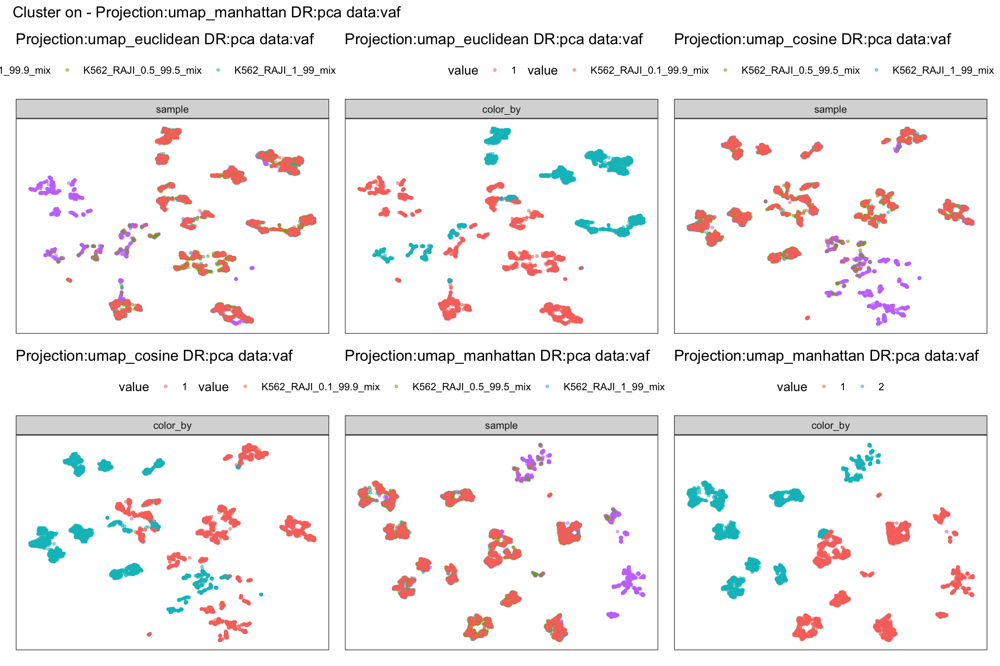
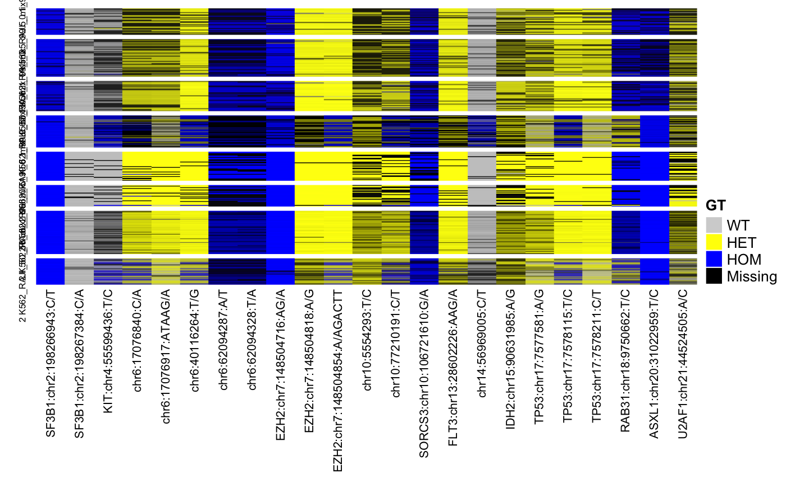

raji_k562_analysis.RmdWork for DNA only. Export can be from a multisample project in Tapestri Insights. usage:
NGT.csv and Variants.csv filesTapestri_Assay objectexport_dir <- system.file("extdata", "insights_2.2_export", package = "TapestriR") #show files dir(export_dir)
## [1] "AF.csv" "DP.csv" "GQ.csv" "NGT.csv" "README.txt"
## [6] "Variants.csv"variants = read_insights_export(export_dir = export_dir)
## Parsed with column specification:
## cols(
## .default = col_double(),
## Sample = col_character()
## )## See spec(...) for full column specifications.## Parsed with column specification:
## cols(
## .default = col_character(),
## DANN = col_double(),
## `Allele Freq (gnomAD)` = col_double(),
## Whitelist = col_logical()
## )## See spec(...) for full column specifications.variants = add_data_layer(variants,'VAF',variants$data_layers$AF)
Testing out different projections. When to use which is open question.
data = variants$data_layers$VAF L<-2 #number of latent dimensions projections = list() # res1<-glmpca(data,L,fam="poi",verbose=TRUE) # projections[['Projection:glm_poi DR:glm_poi data:vaf']] = tibble(x = res1$loadings[,1], y = res1$loadings[,2]) # res2<-glmpca(data,L,fam="nb",verbose=TRUE) # projections[['Projection:glm_nb DR:glm_nb data:vaf']] = tibble(x = res2$loadings[,1], y = res2$loadings[,2]) # res3<-prcomp(data,center=TRUE,scale.=TRUE,rank.=L) # projections[['Projection:pca DR:pca data:vaf']] = tibble(x = res3$x[,1], y = res3$x[,2]) umap_values <- umap(data, scale=TRUE, metric="euclidean", init="laplacian", pca=20) projections[['Projection:umap_euclidean DR:pca data:vaf']] = tibble(x = umap_values[,1], y = umap_values[,2]) umap_values <- umap(data, scale=TRUE, metric="cosine", init="laplacian", pca=20) projections[['Projection:umap_cosine DR:pca data:vaf']] = tibble(x = umap_values[,1], y = umap_values[,2]) ### dimensional reduction using umap set.seed(111) umap_values <- umap(data, scale=TRUE, metric="manhattan", init="laplacian", pca=20) projections[['Projection:umap_manhattan DR:pca data:vaf']] = tibble(x = umap_values[,1], y = umap_values[,2]) ###DR with glm-PCA # res_20<-glmpca(data,5,fam="poi", verbose=TRUE) # #projections[['DR:glm_poi_20 data:vaf']] = tibble(x = res_20[,1], y = res_20[,2]) # variants = add_analysis_layer(assay = variants, layer_name = 'glm_poi_5', as_tibble(res_20$loadings)) # umap_glm_poi <- umap(res_20$loadings, scale=TRUE, metric="euclidean", init="laplacian") # projections[['Projection:umap_euclidean DR:glm_poi data:vaf']] = tibble(x = umap_glm_poi[,1], y = umap_glm_poi[,2]) variants = add_analysis_layer(assay = variants, layer_name = 'projections', as_tibble(projections))
This is not a trivial problem. Its left to user to explore the data. Here are a few examples on determining the number of clusters in your data.
cluster_on = variants$analysis_layers$projections$`Projection:umap_manhattan DR:pca data:vaf` # Elbow method elbow = fviz_nbclust(cluster_on, kmeans, method = "wss") + labs(subtitle = "Elbow method") # Silhouette method silhouette = fviz_nbclust(cluster_on, kmeans, method = "silhouette")+ labs(subtitle = "Silhouette method") # Gap statistic # nboot = 50 to keep the function speedy. # recommended value: nboot= 500 for your analysis. # Use verbose = FALSE to hide computing progression. # set.seed(123) # gap_stat = fviz_nbclust(cluster_on, kmeans, nstart = 25, method = "gap_stat", nboot = 25)+ # labs(subtitle = "Gap statistic method") (elbow + silhouette) #/ #(gap_stat + plot_spacer())
clustering by kmeans and louvain on umap projection and raw features
### Hold all the different customer labels in a single structure name = 'Projection:umap_manhattan DR:pca data:vaf' cluster_by = variants$analysis_layers$projections[[name]] clusters = list() #### do the clustering for(i in 2:3) { kmean_values <- kmeans(cluster_by, i ,iter.max=500) clusters[[paste0('.kmean.cluster.',i)]] = as_factor(kmean_values$cluster) } graph_values <- buildSNNGraph(t(cluster_by), k=150)
## Warning in (function (jobs, data, centers, info, distance, k, get.index, : tied
## distances detected in nearest-neighbor calculationlouvain_clust <- igraph::cluster_louvain(graph_values)$membership clusters[[paste0('.louvain')]] = as_factor(louvain_clust) ############# ## Add cluster labels to analysis data structure ############# variants = add_analysis_layer(assay = variants, layer_name = paste0('Cluster on - ',name), as_tibble(clusters))
can you tell which method is best from plotting?
name = paste0('Cluster on - ',name) color_by = variants$analysis_layers$`Cluster on - Projection:umap_manhattan DR:pca data:vaf`$.kmean.cluster.2 #color_by = variants$cell_annotations$sample plots = list() for(projection in names(variants$analysis_layers$projections)[1:3]) { plots[[paste0(projection, ' sample')]] = tapestri_scatterplot( x = variants$analysis_layers$projections[[projection]]$x, y= variants$analysis_layers$projections[[projection]]$y, color_by = variants$cell_annotations %>% select(sample)) + umap_theme() + ggtitle(projection) + theme(legend.position = 'top') plots[[paste0(projection, ' cluster')]] = tapestri_scatterplot( x = variants$analysis_layers$projections[[projection]]$x, y= variants$analysis_layers$projections[[projection]]$y, color_by = color_by) + umap_theme() + ggtitle(projection) + theme(legend.position = 'top') } wrap_plots(plots) + plot_annotation(name)

Users should become familiar with ComplexHeatmap::Heatmap https://jokergoo.github.io/ComplexHeatmap-reference/book/ We’re only providing a simple example to get started.
variant_order = variants$feature_annotations %>% mutate(CHROM = as.numeric(CHROM), POS = as.numeric(POS)) %>% arrange(CHROM, POS) #order features in chr order genotypes.mat = variants@data_layers$NGT %>% select(variant_order$id) clusters = paste(variants@analysis_layers$`Cluster on - Projection:umap_manhattan DR:pca data:vaf`$.kmean.cluster.2, variants$cell_annotations$sample) snv.h <- ComplexHeatmap::Heatmap( as.matrix(genotypes.mat), name = "GT", col = c("lightgrey", "yellow", "blue", "black"), #circlize::colorRamp2(c(0, 1, 2, 3), c("grey", "yellow", "blue", "black")) heatmap_legend_param = list(labels = c("WT", "HET", "HOM", "Missing")), split = factor(clusters), cluster_rows = FALSE, show_row_names = FALSE, cluster_columns = FALSE, row_title_gp = grid::gpar(fontsize = 6), column_names_gp = grid::gpar(fontsize = 8), show_column_dend = FALSE ) snv.h
